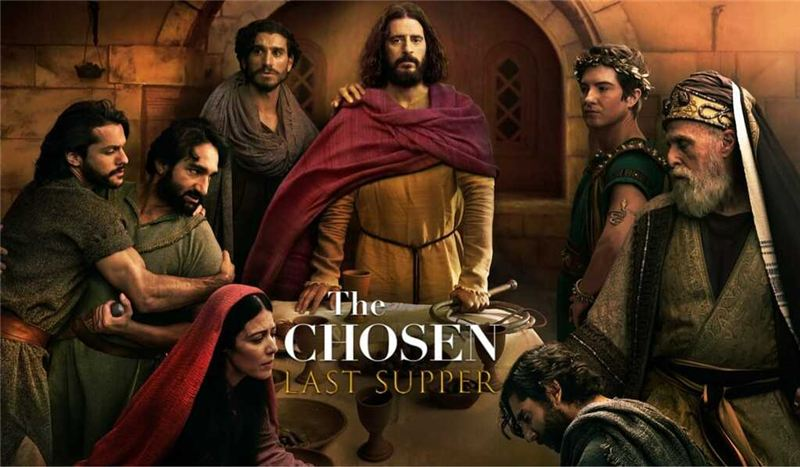
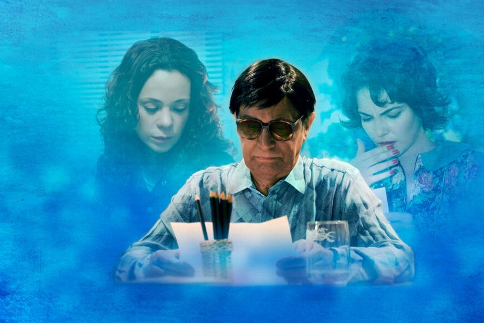
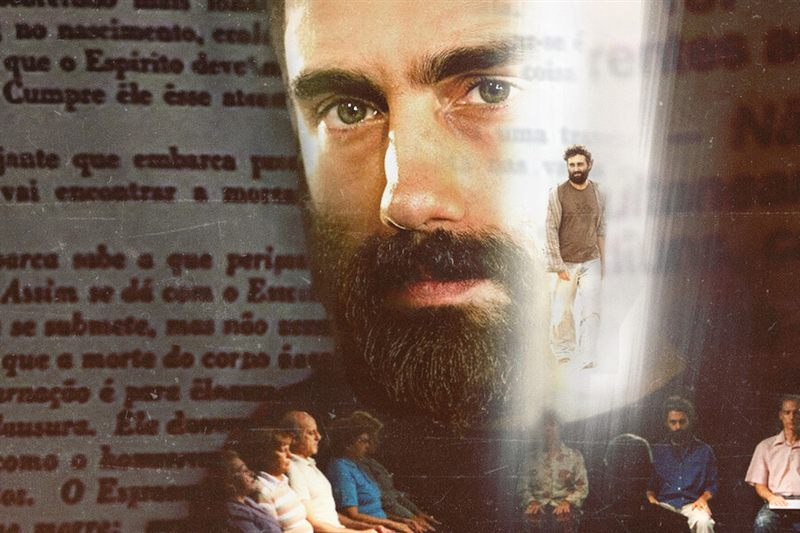
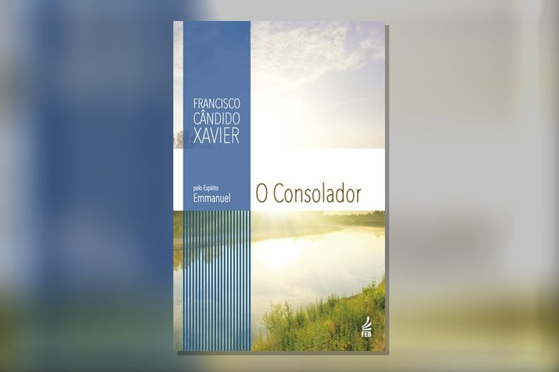

Quem nos inspira
Instituições que admiramos e com quem caminhamos, e indicações de filmes, séries e livros para refletir.
 Instituto Evoluir
Instituto EvoluirFilmes e séries
Histórias sobre fé, amor, recomeço e cuidado com a mente.
Uma Nova Mulher
Três amigas buscam família, amor e coragem para mudar de vida.
Assistir
The Chosen
A vida de Jesus pelo olhar de quem caminhou com ele: os discípulos e as pessoas que ele transformou.
AssistirSessão de Terapia
O dia a dia de um consultório de psicanálise: cada episódio acompanha as dores e as descobertas de um paciente.
AssistirThe Affair
Um caso extraconjugal contado pelos dois lados, com consequências para duas famílias.
AssistirAmor de Redenção
Na corrida do ouro da Califórnia, um fazendeiro se apaixona por uma mulher marcada pelo passado. Uma história de fé e perdão.
AssistirDivertida Mente 2
Riley entra na adolescência e novas emoções, como a Ansiedade, chegam para mudar tudo.
AssistirSomos Todos Iguais
Baseado em fatos reais: um casal em crise encontra, num homem em situação de rua, uma amizade que transforma suas vidas.
AlugarA Felicidade das Pequenas Coisas
Um jovem professor do Butão é enviado a uma vila isolada no Himalaia e descobre o valor da simplicidade.
AssistirOnde assistir conferido em 17/10/2026. Os catálogos de streaming mudam com frequência.
Filmes espíritas
Filmes sobre a Doutrina Espírita, a continuidade da vida e a caridade, para assistir e refletir.
Nosso Lar (2010)
Baseado no livro psicografado por Chico Xavier (pelo espírito André Luiz), acompanha a jornada do médico André Luiz após sua morte, do umbral de sofrimento até sua chegada a uma colônia espiritual.
AssistirChico Xavier (2010)
Dirigido por Daniel Filho, retrata a biografia do maior médium brasileiro, abordando sua dedicação à caridade, a psicografia de cartas e as dificuldades enfrentadas ao longo da vida.
AssistirKardec (2019)
Conta a trajetória do educador francês Hippolyte Léon Denizard Rivail, que deu origem ao Espiritismo sob o pseudônimo de Allan Kardec ao codificar O Livro dos Espíritos.
Assistir
As Mães de Chico Xavier (2011)
Inspirado no livro Por Trás do Véu de Ísis, de Marcel Souto Maior, acompanha a história de três mães que encontram conforto e orientação por intermédio do médium Chico Xavier.
AssistirE a Vida Continua... (2012)
Baseado em obra psicografada por Chico Xavier (pelo espírito André Luiz), mostra o encontro de dois recém-desencarnados que tentam compreender a nova realidade espiritual e os laços que trouxeram da Terra.
Onde assistirBezerra de Menezes – O Diário de um Espírito (2008)
Retrata a vida do médico, escritor e figura histórica conhecida como o “Médico dos Pobres”, famoso por sua assistência espiritual e caridade no Rio de Janeiro.
Onde assistir
O Filme dos Espíritos (2011)
Acompanha um homem em crise existencial que, após tragédias pessoais e pensamentos de autodestruição, descobre a Doutrina Espírita ao ler O Livro dos Espíritos.
AssistirNosso Lar 2: Os Mensageiros (2024)
Continuação do sucesso de bilheteria, acompanha um grupo de espíritos mensageiros que viaja à Terra em uma missão de resgate e auxílio a reencarnados.
AssistirPredestinado: Arigó e o Espírito do Dr. Fritz (2022)
Baseado em fatos reais, narra a história de Zé Arigó, homem simples de Minas Gerais que ficou conhecido mundialmente pela realização de cirurgias espirituais.
AssistirGhost: Do Outro Lado da Vida (1990)
Um clássico do cinema internacional que aborda de forma sensível a continuação da vida após a morte, a presença de espíritos e a força do amor que ultrapassa o plano físico.
AssistirOnde assistir conferido em 17/10/2026. Os catálogos de streaming mudam com frequência.
Livros espíritas
Obras psicografadas por Chico Xavier e leituras para o autoconhecimento e a reforma íntima. Para começar: Nosso Lar, Paulo e Estêvão, Há Dois Mil Anos e Pão Nosso.
Coleção “A Vida no Mundo Espiritual”
Espírito André Luiz, psicografia de Chico Xavier. Leia na ordem de publicação.
Nosso Lar
A chegada do médico André Luiz à colônia espiritual Nosso Lar, depois da morte. O primeiro livro da coleção.
Ver na FEB EditoraOs Mensageiros
André Luiz acompanha espíritos que preparam e amparam trabalhadores do bem para suas tarefas na Terra.
Ver na FEB EditoraMissionários da Luz
Estudos sobre mediunidade, passes, obsessão e reencarnação, ao lado do instrutor Alexandre.
Ver na FEB EditoraObreiros da Vida Eterna
O trabalho dos espíritos que auxiliam as pessoas no momento da passagem para o plano espiritual.
Ver na FEB EditoraNo Mundo Maior
A mente, o cérebro e o perispírito, estudados com o instrutor Calderaro.
Ver na FEB EditoraLibertação
Uma missão de socorro em regiões de sofrimento, sob a orientação do instrutor Gúbio.
Ver na FEB EditoraEntre a Terra e o Céu
Os laços de família e de afeto que unem encarnados e desencarnados.
Ver na FEB EditoraNos Domínios da Mediunidade
Um estudo dos diferentes tipos de mediunidade, acompanhando as reuniões de um grupo espírita.
Ver na FEB EditoraAção e Reação
A lei de causa e efeito explicada por meio de histórias de provas e reparações.
Ver na FEB EditoraEvolução em Dois Mundos
A evolução do ser nos planos físico e espiritual.
Ver na FEB EditoraMecanismos da Mediunidade
A mediunidade explicada com conceitos da física e da biologia.
Ver na FEB EditoraSexo e Destino
Amor, sexualidade e responsabilidade, contados por meio da história de uma família.
Ver na FEB EditoraE a Vida Continua...
Dois recém-desencarnados tentam compreender a nova realidade espiritual e os laços que trouxeram da Terra.
Ver na FEB EditoraEmmanuel, o mentor de Chico Xavier
Romances históricos, estudo da doutrina e comentários do Evangelho.
Há Dois Mil Anos
A encarnação de Emmanuel como o senador romano Públio Lentulus, na época de Jesus.
Ver na FEB EditoraCinquenta Anos Depois
Continuação de Há Dois Mil Anos, entre os primeiros cristãos perseguidos em Roma.
Ver na FEB EditoraPaulo e Estêvão
A conversão e a missão do apóstolo Paulo, ligada à história de Estêvão.
Ver na FEB EditoraRenúncia
A história de Alcíone, um espírito que renuncia à própria felicidade para ajudar quem ama.
Ver na FEB EditoraAve, Cristo!
A fé dos primeiros cristãos no Império Romano.
Ver na FEB EditoraEmmanuel
As primeiras mensagens do mentor de Chico Xavier sobre ciência, filosofia e religião.
Ver na FEB EditoraA Caminho da Luz
A história da humanidade vista pela espiritualidade.
Ver na FEB Editora
O Consolador
Perguntas e respostas sobre ciência, filosofia e religião.
Ver na FEB EditoraPensamento e Vida
A força do pensamento na construção da nossa vida.
Ver na FEB EditoraCaminho, Verdade e Vida
Comentários a versículos do Evangelho, em mensagens curtas para leitura diária.
Ver na FEB EditoraPão Nosso
Comentários a versículos do Evangelho, em mensagens curtas para leitura diária.
Ver na FEB EditoraVinha de Luz
Comentários a versículos do Evangelho, em mensagens curtas para leitura diária.
Ver na FEB EditoraFonte Viva
Comentários a versículos do Evangelho, em mensagens curtas para leitura diária.
Ver na FEB EditoraOutras obras de Chico Xavier
Poesia, história e leituras para toda a família.
Parnaso de Além-Túmulo
O primeiro livro de Chico Xavier, com poemas de vários poetas desencarnados.
Ver na FEB EditoraBrasil, Coração do Mundo, Pátria do Evangelho
A história do Brasil vista pela espiritualidade.
Ver na FEB EditoraBoa Nova
Histórias da época de Jesus e de seus apóstolos.
Ver na FEB EditoraJesus no Lar
Histórias curtas, ótimas para ler e conversar em família.
Ver na FEB EditoraPai Nosso
Um clássico da literatura espírita para crianças.
Ver na FEB EditoraReforma íntima
Autoconhecimento e transformação interior.
Orações
Preces para o dia a dia, para os momentos difíceis e para o Evangelho no Lar. Clique para ler a oração completa.
Pai Nosso
Pai Nosso que estais nos Céus, santificado seja o vosso Nome, venha a nós o vosso Reino…
Ler oraçãoAve Maria
Ave Maria, cheia de graça! O Senhor é convosco, bendita sois vós entre as mulheres e bendito…
Ler oraçãoPrece de Cáritas
Deus, nosso Pai, que sois todo poder e bondade, dai força àqueles que passam pela provação…
Ler oraçãoOração do Perdão
Perdoo e peço perdão, livre, permanente e plenamente, a todos aqueles que em qualquer época…
Ler oraçãoConfia sempre
Não percas a tua fé entre as sombras do mundo. Ainda que os teus pés estejam sangrando…
Ler oraçãoPrece das Fraternidades
Nosso Divino Mestre, Salvador e amigo; fortalecei-nos e amparai-nos para que possamos…
Ler oraçãoPrece ao Dr. Bezerra de Menezes
Nós te rogamos, ó Pai de infinita bondade e justiça, as graças de Nosso Senhor Jesus Cristo…
Ler oraçãoOração de São Francisco
Senhor, fazei de mim um instrumento de vossa paz. Onde houver ódio, que eu leve o amor; onde…
Ler oraçãoPrece ao Anjo de Guarda
Meu Deus, permite que os bons Espíritos que me cercam venham em meu auxílio quando me achar…
Ler oraçãoSão Miguel Arcanjo
São Miguel à frente para me defender, São Miguel atrás para me proteger, São Miguel à…
Ler oraçãoPrece ao Amanhecer
Venho, Pai, me reverenciar diante da luz que me abraça. Venho, Mestre, me colocar à…
Ler oraçãoPedido antes de dormir
Todas as noites, peça ao seu mentor individual, aos amigos espirituais e ao mestre Jesus…
Ler oraçãoExercícios para a reforma íntima
Executar alegremente as próprias atividades. Silenciar diante da ofensa. Esquecer o favor…
Ler oraçãoEvangelho no Lar: roteiro passo a passo
Local e horário: defina um dia e um horário fixos na semana. Prepare um lugar tranquilo e…
Ler oraçãoMonte o seu book de preces
Escolha as orações, junte fotos da família e gere um livrinho em PDF para imprimir, guardar ou presentear. As fotos ficam só no seu aparelho.
Quer caminhar com a gente?
Seja voluntário, parceiro ou apoiador — toda ajuda faz diferença.